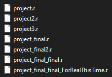
Introduction to version control with Git for researchers
<!---
# Style Notes:
- Buttons, pages, menu items, etc. are referred to as "*<NAME>*".
- All items found in the glossary are linked, every time they are used.
---><!---
# TODO:
- [X] Update alt-text for images
- [X] Move .gitignore section earlier
- [X] Add "Other Resources" section (with emails)
- [X] Add windows credentials section
- [X] Fix glossary
- [X] Make references to *Git*, *GitHub* and *Sourcetree* consistent.
- [X] Revert
- [X] Branches
- [X] Make section tags consistent
- [X] Make references to buttons consistent
- [ ] Make references to sections consistent
--->Introduction
What is ‘Version Control’?
Have you ever found yourself naming files like the image below? If so, version control can help you.
Version control is a system which records all changes made to documents stored in a repository. These documents are usually source code files but can be any format (e.g. word documents). This system makes a new entry in the version history every time changes are committed; each record contains the list of changes made, a timestamp of when they were made and the name of the person who made them.
Why Should I Bother with Version Control?
Having a record of previous versions allows anyone to look through old versions of their projects without needing to keep a local copy of every version they have made. This is especially useful when a new version is found to have new bugs since the last version. The individual changes can be examined to find the source of the problem without the need to look through the entire codebase. In particular with GitHub, when you go to view a commit, it will highlight the changes between versions for you. Furthermore, if needed, Git can allow you to revert back to a previous version (although how to do this is not covered in this document).
It also makes it easy to share code around if there is a public repository containing the code.
What is Git and GitHub?
You may have previously heard about both Git and GitHub, but the difference between them is rarely explained. Git is an application that implements version control for any type of file, it is Git that actually does the work. Git can be used to track changes in a project on your local computer, without publishing it to the web, but this tutorial will focus on using GitHub as a remote repository.
GitHub is simply a web hosting service for projects; this is where projects can be stored, tracked, and published. A free account can create 3 private repositories which will be visible only to the user who created them and those who are explicitly given permission.
To put a metaphor on it, GitHub could be thought of as a warehouse which stores products (our files); Git would be the forklift used to move the products in and out of the warehouse.
What is Sourcetree?
Git is often used as a command line tool, but this tutorial will use a graphical application to interact with it. Sourcetree simplifies the use of Git by allowing users to use a graphical interface, rather than needing to remember commands to be typed into the command line. This also makes it much easier to see changes and to perform more advanced operations.
Some applications have their own integration for Git, but many do not. Sourcetree is a stand-alone application which allows us to version control our files, while using whichever application we prefer to create and modify those files.
Download and Install
This section demonstrates how to set up Git and Sourcetree for a Windows computer, but the steps will be very similar for Macs.
Download and Install Git
On university computers, Git must be installed via the software centre.

Download and Install Sourcetree
Sourcetree can be installed by downloading it from the Sourcetree website. Make sure to click the “Download for Windows/Mac” button, rather than the “Download for free” button.
Registration
If you have an existing BitBucket account, then this can be used to register the software, otherwise registration can be skipped.
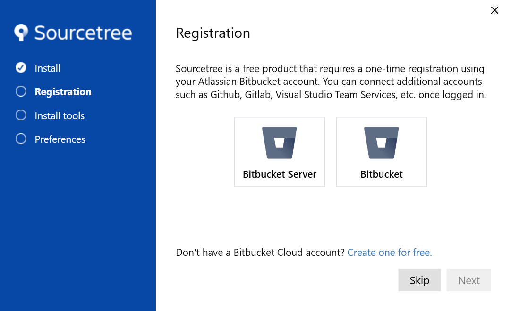
Install Tools
For this tutorial, we are using Git, so Mercurial can be unchecked.
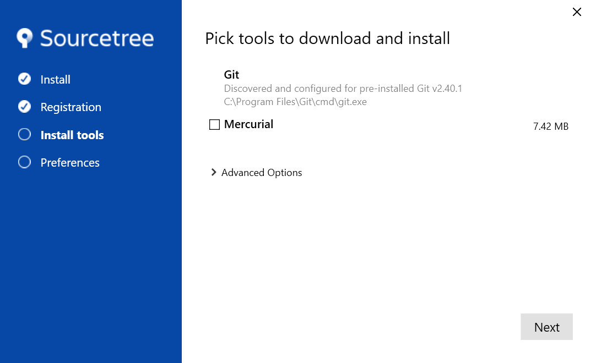
Preferences
Finally, Sourcetree requires a user name and email address. this is used to sign the commits in Git. It is recommended to use your full name without spaces, and your university email address.
You may also be asked about setting up SSH keys, simple select the “No” button and move on.
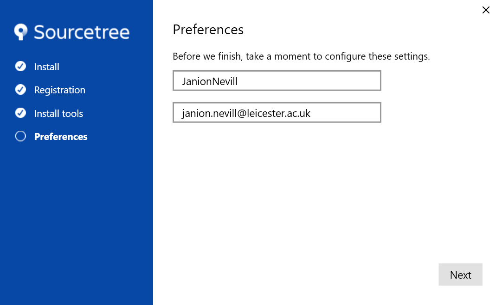
Home Page
Sourcetree will open the home page with no repositories currently listed.
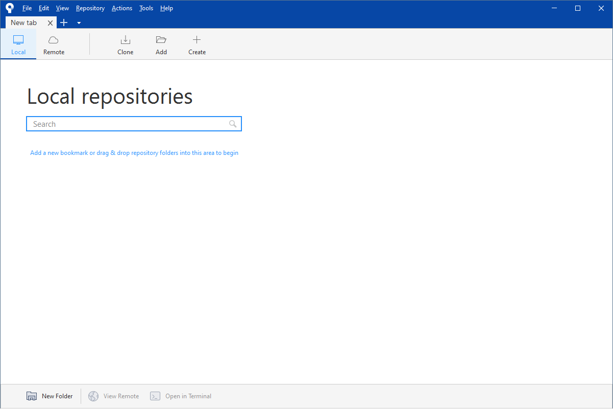
Creating and Cloning a GitHub Repository
This section will focus on starting a new project. If you have an existing repository that you would like to work on, then skip to @ref(clone).
Create a repository
First, you need to create a new repository within your GitHub account. Go to http://github.com and create a new repository using the green “New” button in the top-left corner of the home page (figure @ref(fig:new-repo-button)).
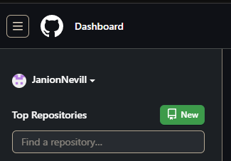
Next, fill in the necessary details as in figure @ref(fig:create-new-repo). You can choose whether to have your repository as public or private depending on your needs; generally a public repository is preferable unless your code contains sensitive information or intellectual property which is to be protected.
Helpfully, GitHub provides templates for a .gitignore file, which will prevent you from committing files which are not required to share the project. Select the default for your project’s language from the dropdown menu. This will be covered in more detail in @ref(git-ignore)
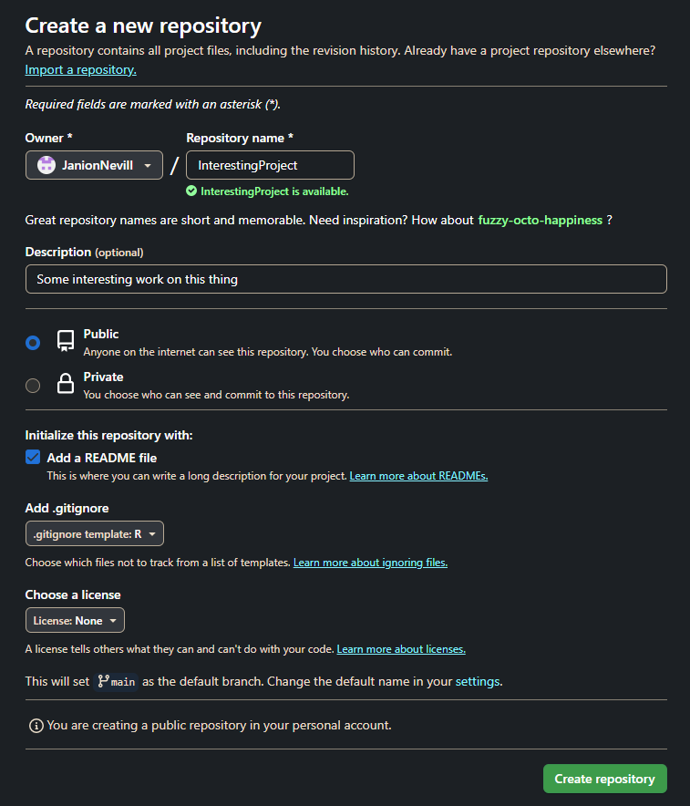
Once you have completed the configuration, click “Create repository”. You will be taken to the home of the project which will contain 2 files: .gitignore and README.md. This “README” file is a markdown file which is used to describe the project. By default, it will contain the name and description entered on the previous page.
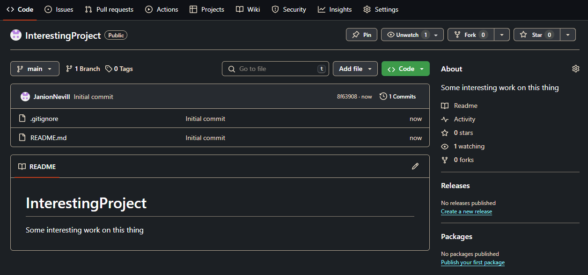
Clone the Repository
To make changes to the repository, it must first be cloned to the local computer. Copy the URL of the repository from your web browser, then click “Clone” in Sourcetree. On this page, you can paste in the repository URL, set a working directory to which to download the files, and enter a name for the project within Sourcetree.
Further repositories can be cloned by clicking the “+” button on the right-hand side of the tab header.
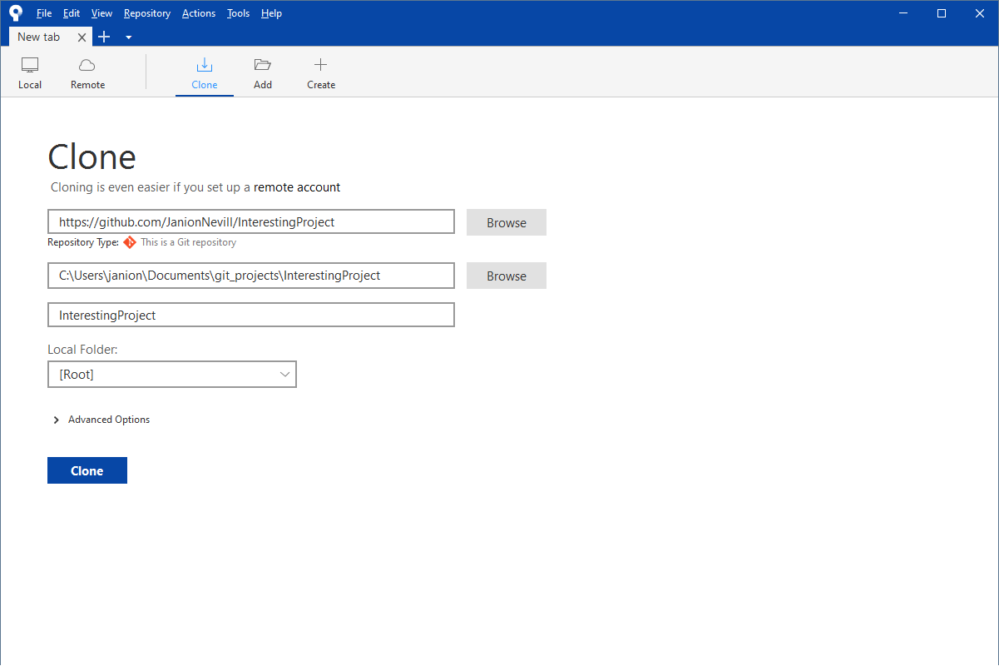
After clicking the “Clone” button, Sourcetree will open the project in the current tab.
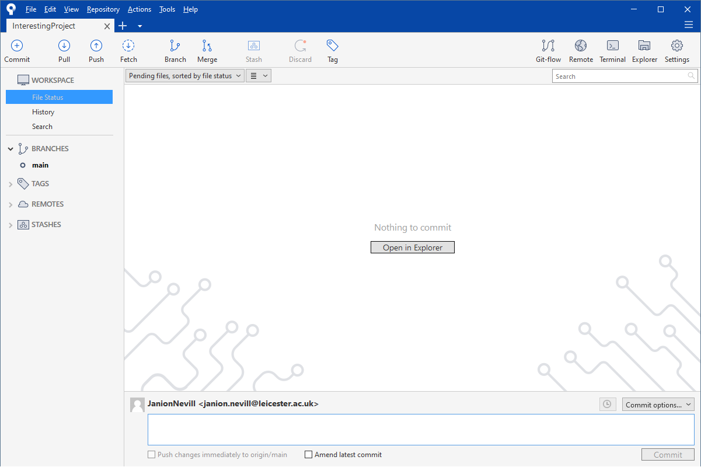
Possible Directory Error
If you are using a university laptop, depending on where you clone the repository within your computer, you may get the following error pop up (figure @ref(fig:directory-error)). If this happens, you’ll need to do as they suggest. Open Git Bash by searching for it in the windows search bar, and type in the text suggested by the error message, then simply hit the enter key on your keyboard.

Preventing File Being Committed
When the remote repository was created, a file titled .gitignore was created. This file is what Git uses to know which files and directory do not need version control. It is not necessary, but will mean that Sourcetree won’t get clogged up with files that don’t need version control. This file can be edited in a text editor, like any other file. This may include files that are automatically generated or managed by other software. A good example of this is the editor configuration within the application used to write code; that is data related only to the local setup of the project, and is not needed for someone else to run the code on their own computer. You should also add files that contain sensitive information, such as datasets, passwords or API keys.
Each line in this file names a file, directory or file type to be ignored when committing. All files of a given type can be excluded by using a * as a wildcard, eg. *.xlsx will ignore all excel spreadsheets. A directory can be excluded by adding a line with the directory name, followed by a /, eg. output/ will ignore the contents of the “output” directory, but not a file named “output”.
Committing and Pushing
In Git terminology, changes are “committed” to the local repository, then “pushed” to the remote repository (in this case on GitHub). By committing, the changes are saved into the version history, but remain only on the computer on which they were made. By pushing, the changes are uploaded to the GitHub.
Commit Changes
To test that the project has been successfully set up and linked with the GitHub repository, we are now going to commit changes and check that GitHub also receives it.
Open the README.md file in any text editor, and add some new text. Next, create a new file in the project directory. In this example a file named ImportantScript.py was created. These changes will be automatically detected by Sourcetree as shown in @ref(fig:diff-files).
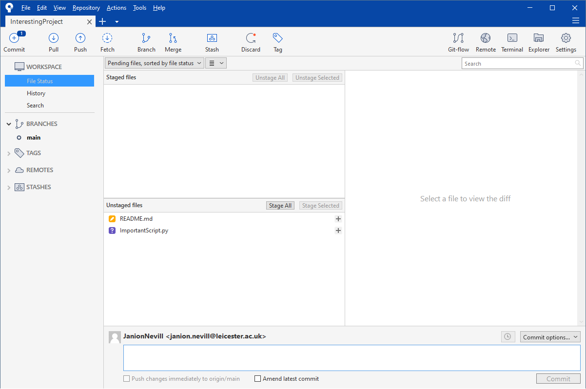
Note that you may see different coloured symbols next to each file. An orange square with a pencil indicates that this is an existing file that has been edited. A purple square with a question mark indicates that this file is new since the commit.
Clicking on a changed file will show a diff (Short for “difference”) in the right-hand panel, as in @ref(fig:diff-change).
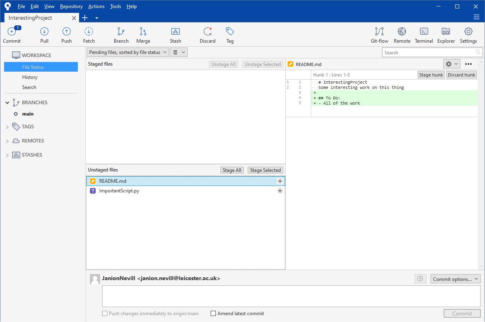
Before committing these changes, they must first be “staged”. This means marking the files as ready to be committed. Files can be stage individually by selected the grey plus button to the right of each file, or all at once, using the “Stage All” button.
Once all the files are staged, a commit message should be added to the text box at the bottom of the page, then the “Commit” button can be clicked. Often the option to “Push changes automatically to origin/main” will be selected, but at this moment, the file is only committed.
Again, note the different symbols next to the files. The green square with a plus symbol indicates that the file is a new file, rather than an edit to an existing file in the repository..
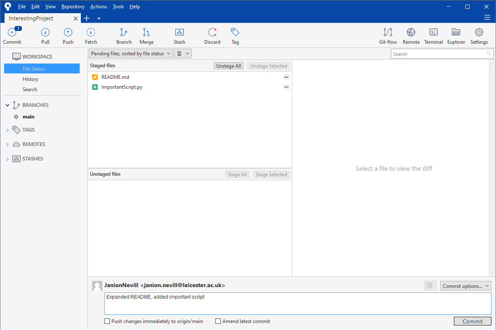
Once the changes have been committed, Sourcetree will display the “History” page, showing all commits to the project.
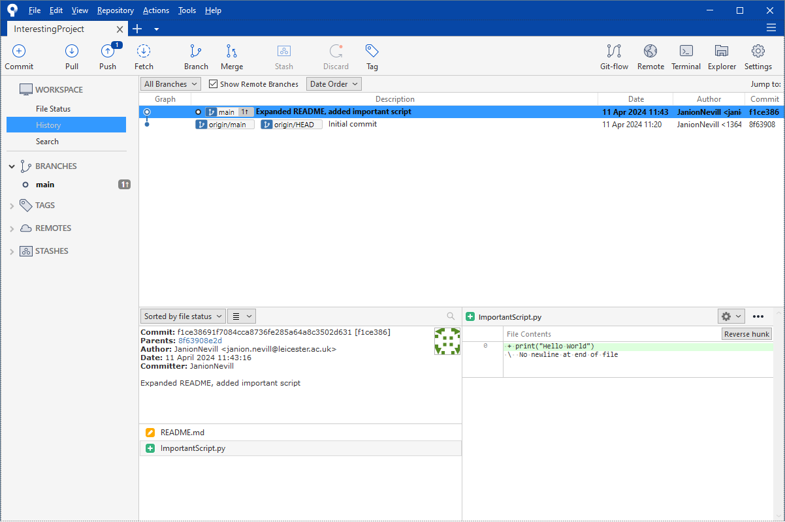
Checking the project on GitHub will show that the changes have not yet been uploaded. This will be done in the next step, by “pushing” to the remote repository.
Push Changes to GitHub
Start Push
Note that in the top-left of the Sourcetree window, the “Push” button has a 1 badge on it. This is showing that there is 1 local commit which has not yet been pushed to the remote repository. Clicking that button will open a popup to configure that “push” @ref(fig:push).
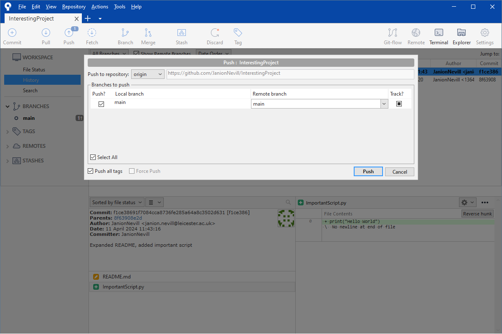
Click the “Push” button, and the commits will be pushed to GitHub.
Provide Credentials
When you push for the first time, you will need to provide GitHub credentials to prove that you have permission to push to the remote repository. When you push subsequent times, the credentials should be stored, so you don’t need to enter them again.
Windows Credentials Issue
On Windows computers, it is possible that the first push will fail due to the credentials being invalid, as in @ref(fig:failed-push). This is due to Windows Credentials Manager using the wrong credentials to connect to GitHub.
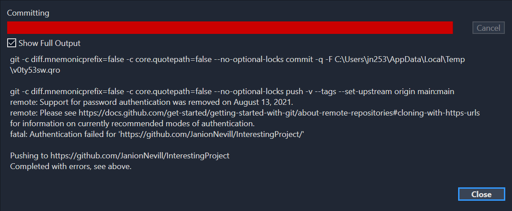
To fix this, the credentials should be cleared. Open the Windows Credentials Manager by searching for “credentials” in the task bar, then click “Manage Windows Credentials” to open the manager.
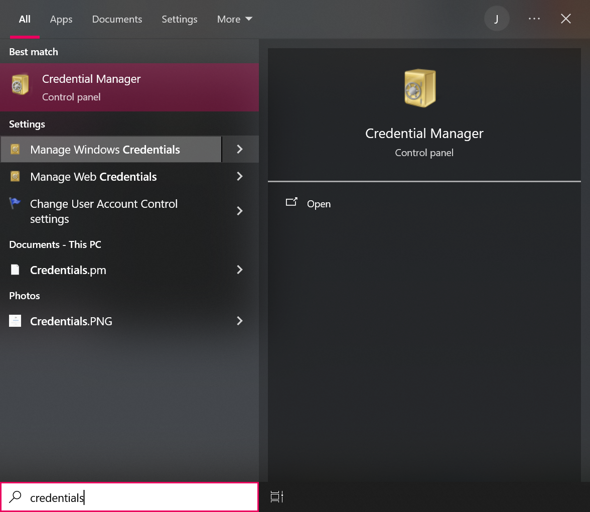
Then remove any credentials which mention “git”, as shown in @ref(fig:windows-credentials-remove).
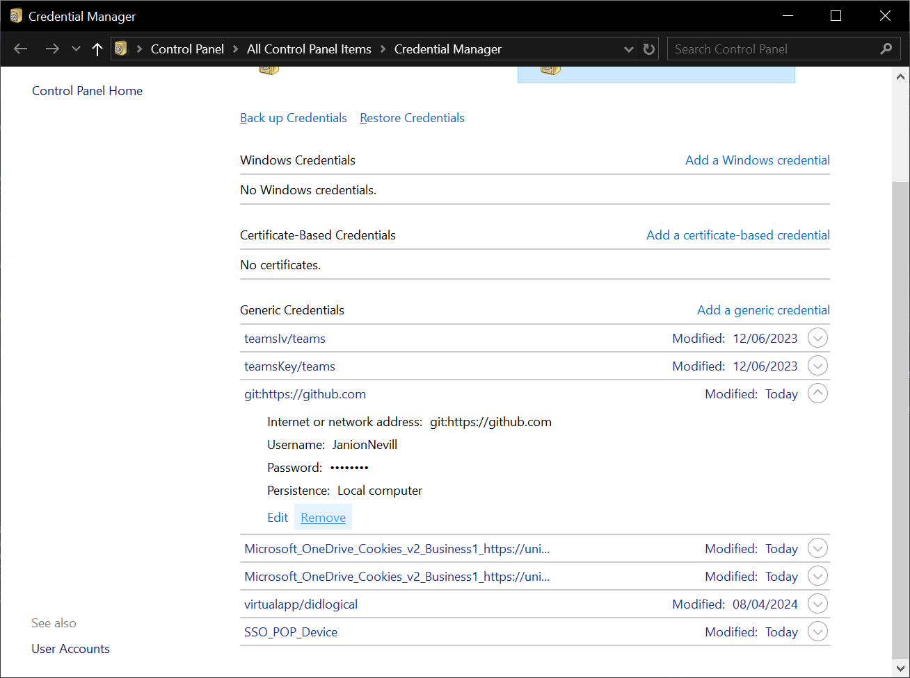
Once this has been done, retry the push.
Provide GitHub Credentials
You will most likely be faced with a popup as seen in figure @ref(fig:credentials) to link your GitHub account. Choose “Sign in with your browser” and then simply sign in (if you’re already signed in on your web browser you may not need to do anything).
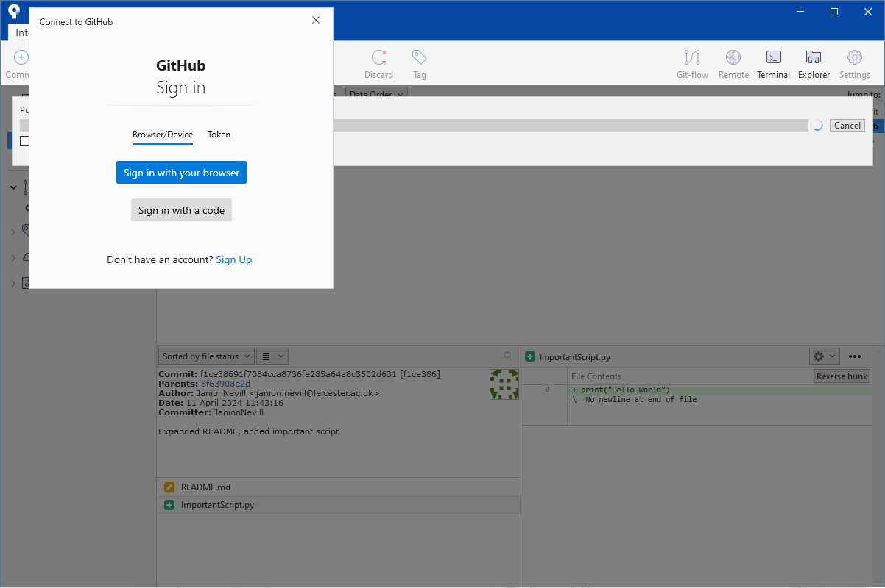
Completed Push
After signing in, the push will complete and Sourcetree will return to the “History” tab.
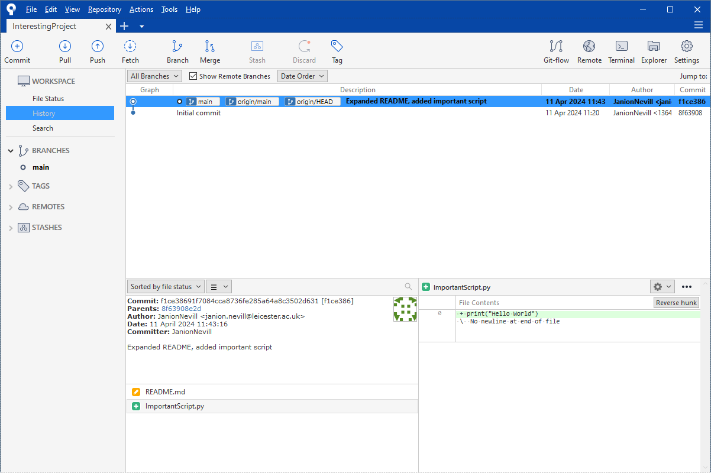
Checking the repository on GitHub will now show that the changes have been received by GitHub. The page will need to be refreshed if it was left open from the original setup.
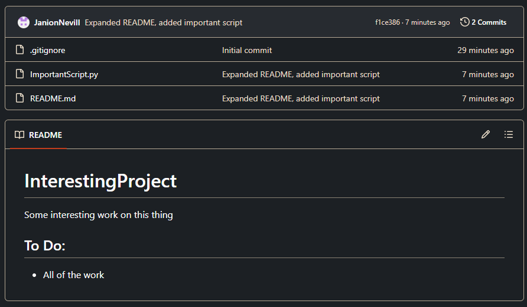
Reverting Changes
If changes have been made locally and are deemed to be unnecessary, then they can be ‘reverted’ back to the state of the most recent commit.
On the “Commit” page in Sourcetree, right-click on the file to be reverted, and click “Revert”, or “Discard File Changes”. This will discard all changes to that file since the most recent commit.
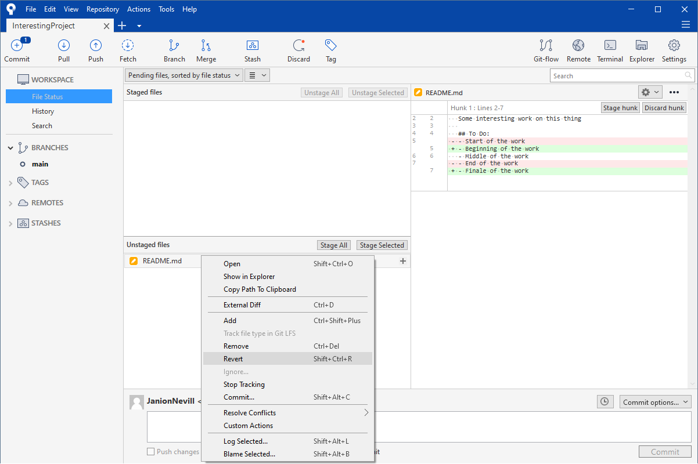
Fetching and Pulling: Collaborating with Others (or Yourself)
If all the changes come from a single computer, then committing and pushing are the only operations that are needed. However, more often than not, changes will be committed from multiple computers, either from the same user or multiple users. In these cases, the local repository on each computer needs to be synchronised with the remote repository, downloading changes made on other computers, and merging them into the local changes.
It is worth noting that changes made on one computer will only be available on other computers if the changes have been committed and pushed, even if the changes on the first computer were made by the same user.
This section will demonstrate how to keep a local repository in synch with the remote repository on GitHub.
Commit Change via GitHub Directly
Instead of committing changes from another computer, changes can be committed directly on GitHub. Go to the home page of the repository and click the pencil button in the top-right of the README panel, as shown in @ref(fig:github-edit).
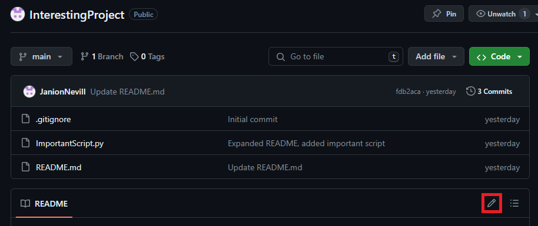
Make some changes, then click the “Commit Changes” button.
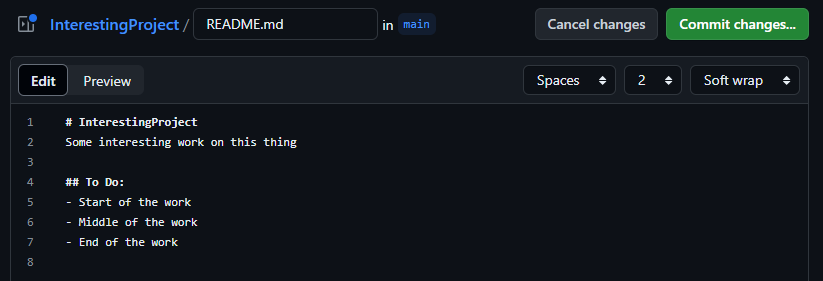
Then click the “Commit Changes” button on the popup shown in @ref(fig:github-commit).
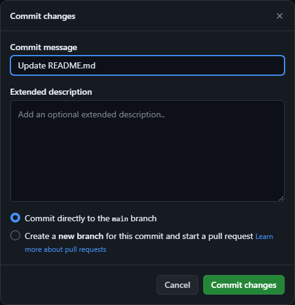
Fetch Changes
When bringing in changes from the remote repository, “fetching” changes allows the incoming changes to be viewed without applying them to the local repository. It is not essential, but can be useful.
Back in Sourcetree, press the “Fetch” button to see the incoming changes from GitHub. Leave the default options on the popup, and click “OK”.
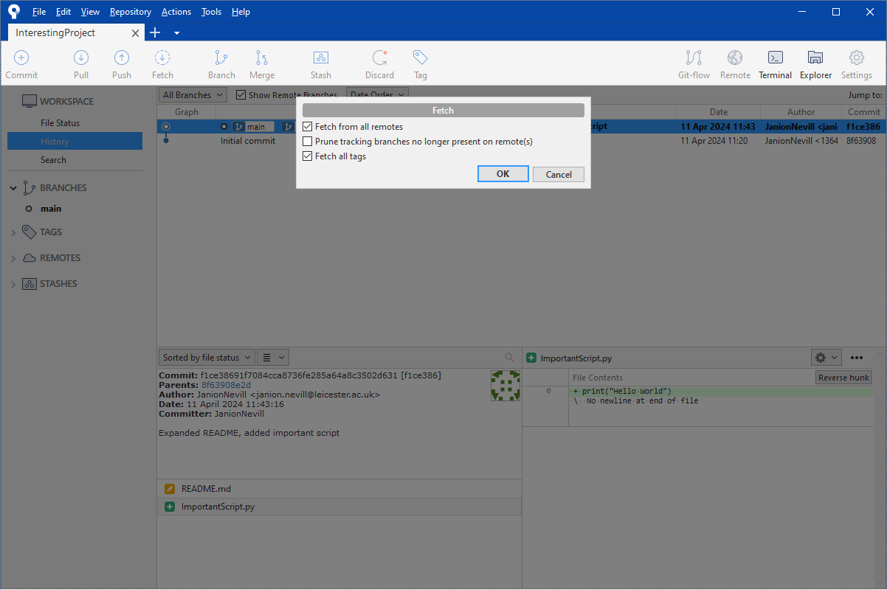
Sourcetree will show the “History” tab, selecting and emboldening the commit on which the local changes are based, as in @ref(fig:fetched).
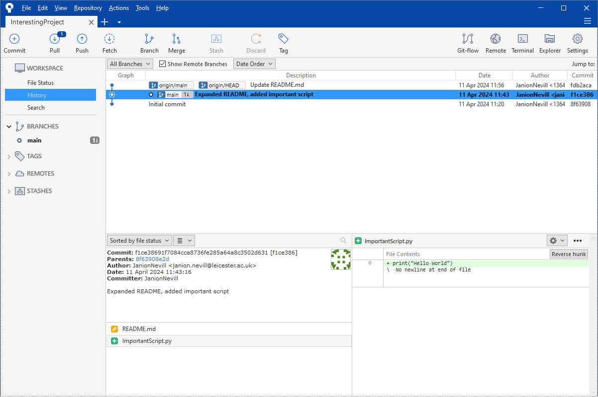
Pull Changes
If the changes are to be merged into the local repository, then they can be “pulled”. Click the “Pull” button. Again, the default options can be left as they are as in @ref(fig:pull).
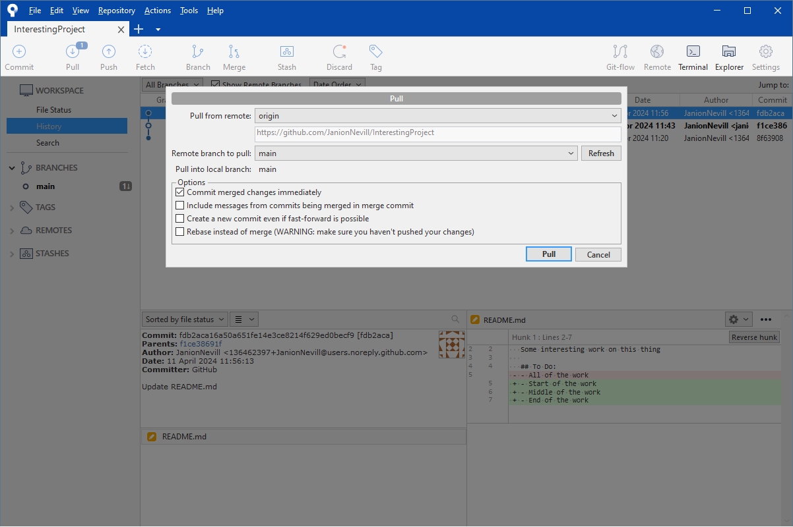
Click “Pull” to bring in the changes. Sourcetree will show the updated “History” page, and the local files will now include the changes made on GitHub.
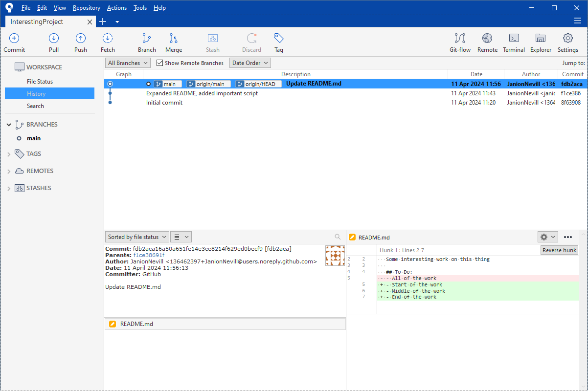
Merging Conflicts
In this section, changes will be made to both the local and remote repositories, and the resulting conflict will be resolved.
Make Changes Locally and on GitHub
Similarly to @ref(commit), open the README.md file in any text editor, and add a new line. Similarly to @ref(remote-commit), add a different new line to README.md and commit it directly on GitHub.
Pull Changes from GitHub
Uncommitted Changes
Pulling changes to a file which has uncommitted local changes will result in an error, as shown in @ref(fig:uncommitted-pull). The changes must be committed before the pull can be completed.
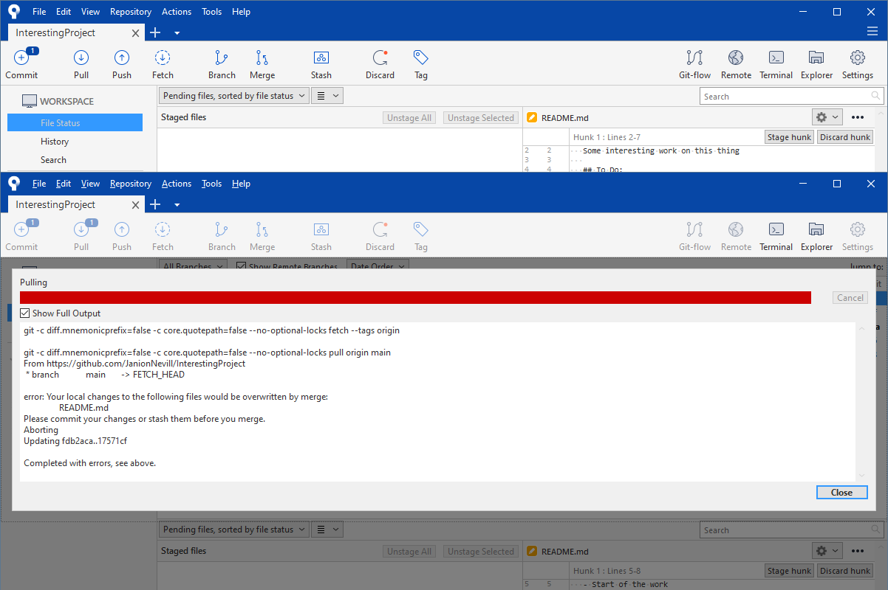
Committed Conflicting Changes
The local changes can either be committed or reverted. For this example, commit the changes as shown in section @ref(commit).
Merge Changes
Pull
Clicking the “Pull” button again will show that there are conflicts to be resolved. Click “Close”, and open the conflicting file in your preferred editor. The conflicting sections will be formatted as shown in @ref(fig:resolve-conflict).
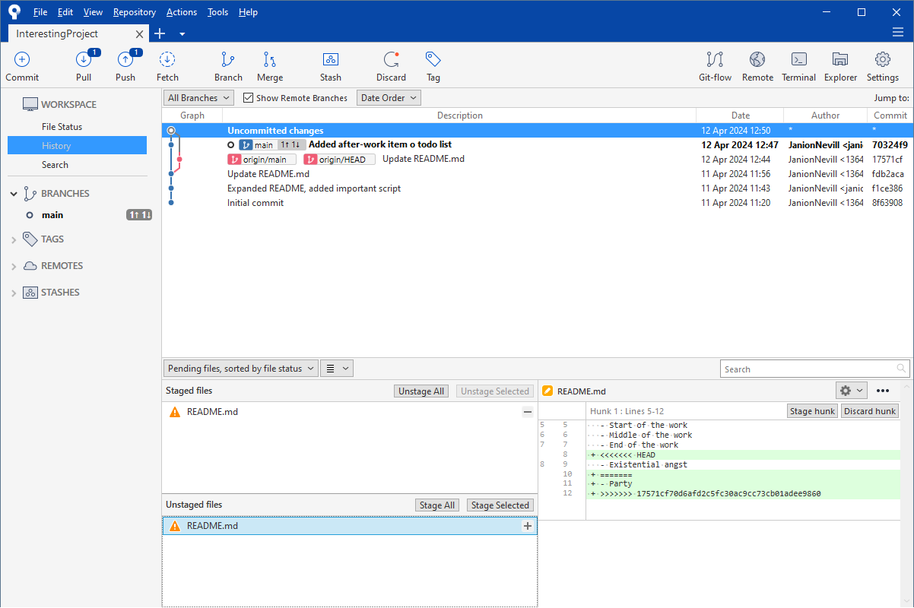
Resolve Conflicts
If the changes are to be fully overwritten by either the remote or the local file, then the right-click menu, shown in @ref(fig:resolve-conflicts-menu), can be used to “Resolve Using ‘Mine’” to overwrite with local changes, or “Resolve Using ‘Theirs’” to overwrite with remote changes.
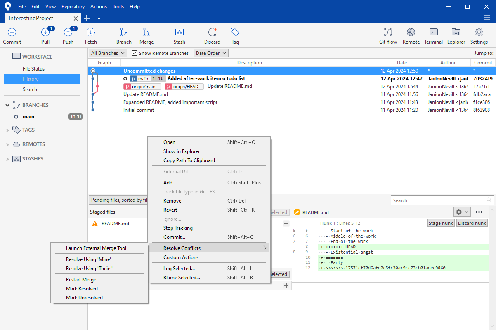
If the conflicts are more complex, then the conflicting file will need to be edited and merged manually. Make the necessary changes to the file, making sure to remove the characters that were added to indicate merge conflicts (i.e. ‘====’ and ‘<<< HEAD’). Once complete, use the right-click menu and select “Mark Resolved”, which will automatically stage the changes.
Example
Consider a to-do list which contains an item “Email Frank”. One user has changed the item to “Email Helen” because Frank has moved onto another project, and added an extra item “Book bouncy castle”, as in @ref(fig:merge-conflict-first-user).
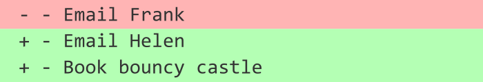
After the first user’s commit and push a second user had made changes without first pulling the first user’s changes. They added ‘about “Operation Falafel”’ to the “Email Frank” item, to record what they are emailing about, and added an extra item “Submit paper abstract”, as in @ref(fig:merge-conflict-second-user).
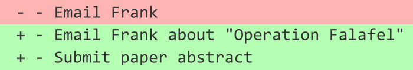
If the second user tries to commit and push their changes, they will be warned that their changes are out-of-date with respect to the remote repo. When they pull changes, they find that their local changes conflict with the remote changes, as in @ref(fig:complex-conflict). Both sets of changes are valid, so they must be manually combined in order to keep all of the information. This is not something which can be done automatically; the manual changes must be done in an external editor, such as Notepad++. Git will mark the conflicting changes with marker lines (‘<<< HEAD’, ‘====’ and ‘>>>> …’), as in @ref(fig:complex-conflict).
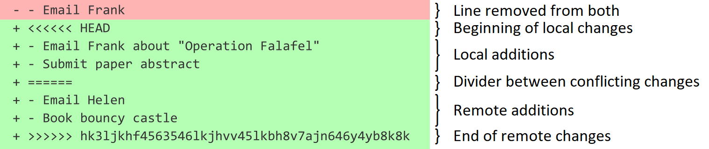
In this case the “Email Frank” item can be combined to include both the new name, and the additional information. Both new items are also included in the final resolved file. Note that the marker lines must be manually removed. See the resolved conflict in @ref(fig:complex-conflict-resolution).
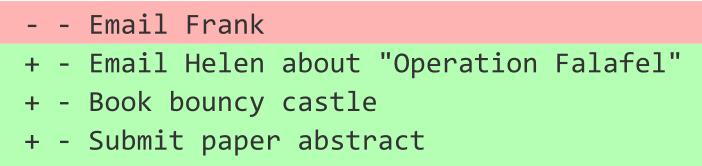
Stage, Commit and Push
Once the conflicts have been resolved, then they can be committed and pushed as normal. A commit comment will be automatically generated for this merge commit, as shown in @ref(fig:resolved-conflict-commit).
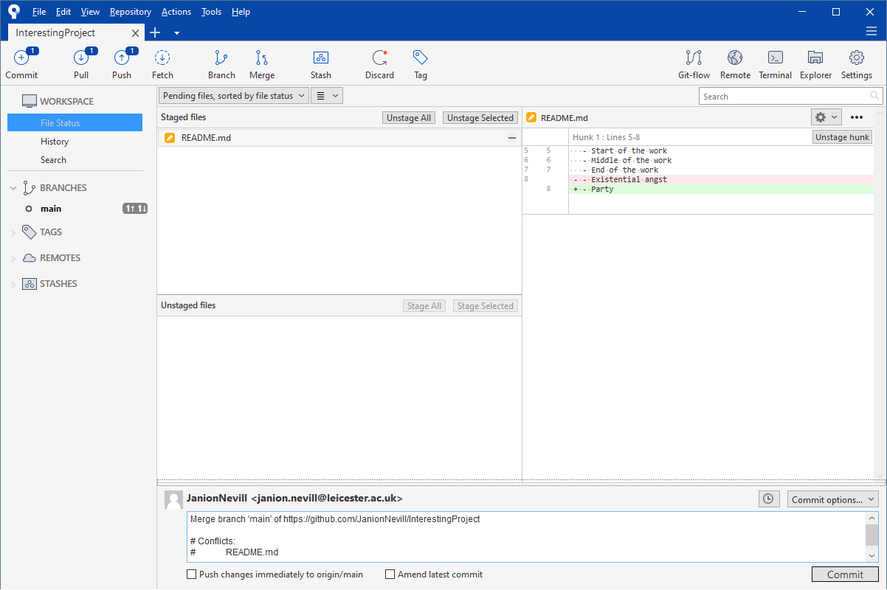
The “History” page will be shown again with the changes merged in, as if @ref(fig:resolved-conflict-pushed).
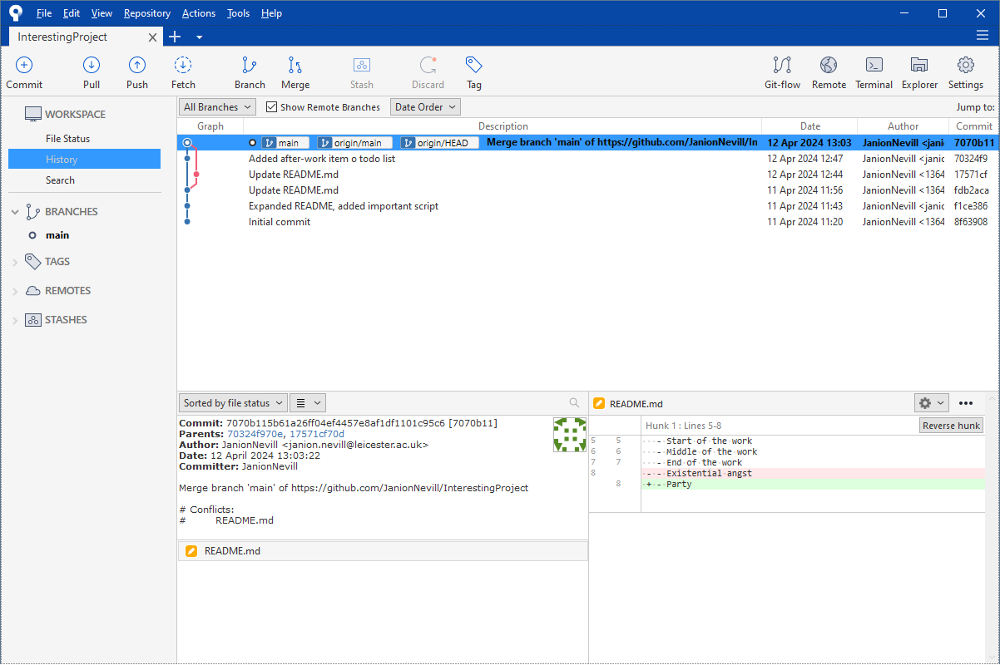
Branches
Whilst often not necessary when working individually on a project, “branches” are a useful feature of Git, allowing the user to make changes whilst keeping a safe copy of the original code still available. It is also useful when multiple people are working on different features in the same codebase - each user can be working on a separate branch, avoiding conflicts until the changes are merged back into the main branch.
Create a Branch
Branches can be created on the remote repository directly using GitHub, or on the local repository using Sourcetree, then pushed to GitHub. Both of these approaches are described here. Either method is acceptable, so feel free to use whichever workflow is preferred.
Using GitHub
Create Branch
Go to the project home and click on the branches button, titled “1 branch”, in the top-left.
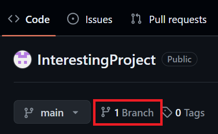
GitHub will display all of the current branches in the repository; currently there is only one branch, “main”.
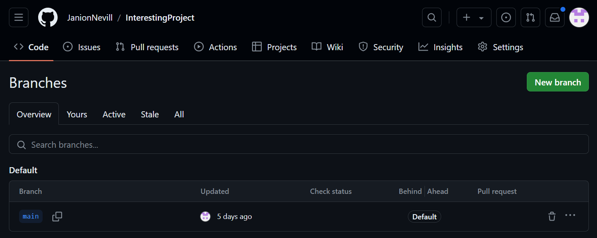
Click the “New Branch” button, in the top-right, and enter a branch name. Branches must have unique names to identify them. GitHub allows for branches to be created from any other branch, but in this case there is only “main”. Click “Create new branch”.
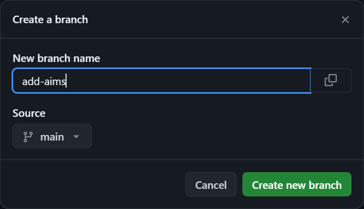
GitHub will return to the branches page, but the new branch is now present. This can now be checked out in Sourcetree.
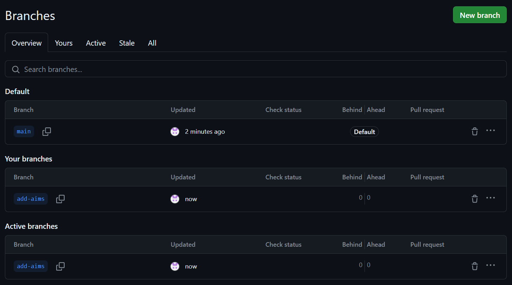
Checkout branch
To access this branch in Sourcetree, it must be checked out. In order for Sourcetree to detect the newly created remote branch, changes must first be pulled. Once that has completed, find the branch by expanding the “Remotes” section in the left-hand panel, and select it. Right click on the selected branch and click “Checkout origin/…”.
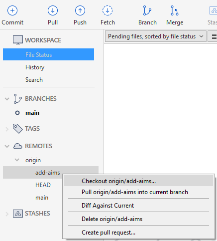
Leave the default options in the popup, and click “OK”. Once it has finished processing, the working copy is now on the branch.
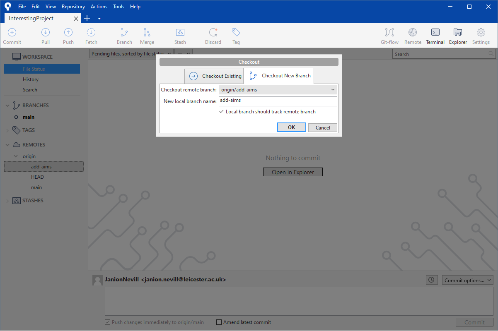
Using Sourcetree
Checkout the Base Branch
Before a branch is to be created, the base for the new branch must be checked out. For a branch on the remote repository, this is described in @ref(checkout). If the base branch is already checked out, for instance “main” in this case, then skip to @ref(sourcetree-create-branch).
A branch on the local repository can also be used as a base. It can be checked out by right-clicking on the branch within the “Branches” section in the left-hand panel, and clicking “Checkout…”. The branch which is currently checked out is shown in bold.
Create the Branch
In Sourcetree, click the “Branch” button in the top bar, and enter the name of the new branch. Click “Create Branch”, and it will be created and checked out.
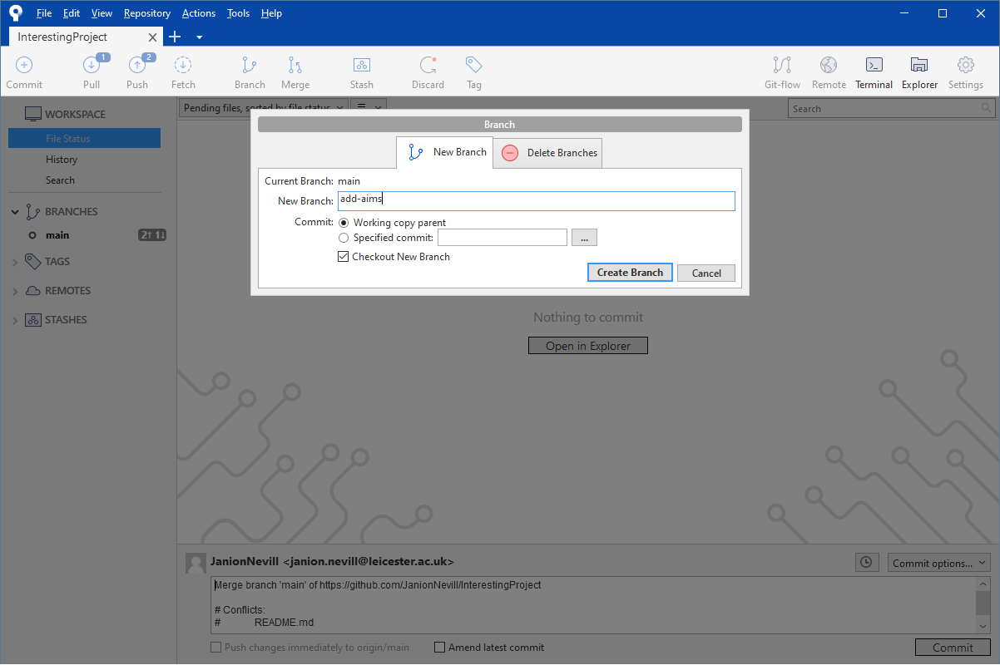
To add the new branch to the remote repository on GitHub, changes must be pushed. Click the “Push” button in the top bar, then select only the new branch to be pushed. The “Track?” checkboxes can be left as the defaults. Click “Push” to add the new branch to the remote repository.
For any future commits on a branch, it is only necessary to push the current working branch
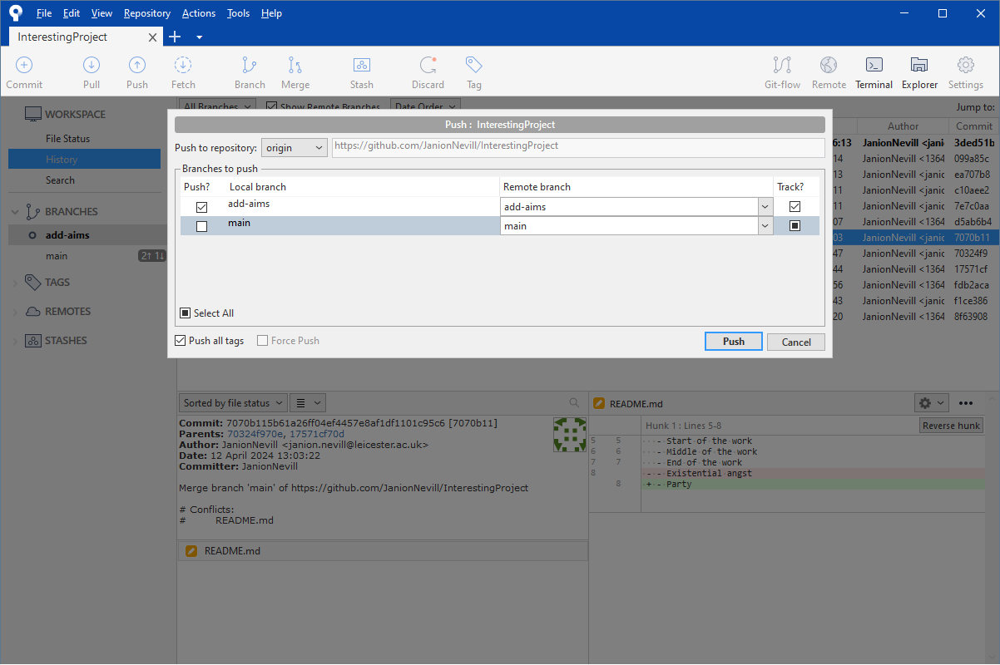
Merging Branches
After changes are completed on a branch, they should be merged back to the main branch. The simplest way to do this is via GitHub, but it can also be done via Sourcetree. If a project does not have a remote repository, then merging can only be done via Sourcetree.
First, make a change, commit it to the new branch and push the commit. In this case, “aims” have been added to the README file.
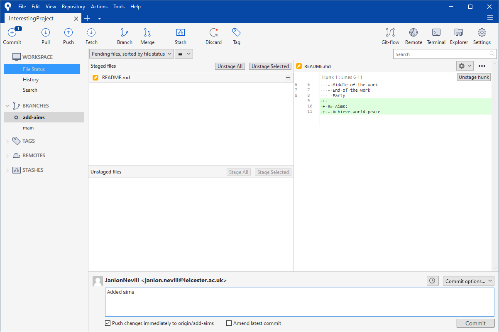
Merging in GitHub
Create Pull Request
Go to the repository in GitHub, and select the branch in the drop-down box in the top-left. You may see that the branch is ahead of the main branch, or that changes were recently pushed to the branch. To merge the branches, click on the green “Compare and pull request” button.
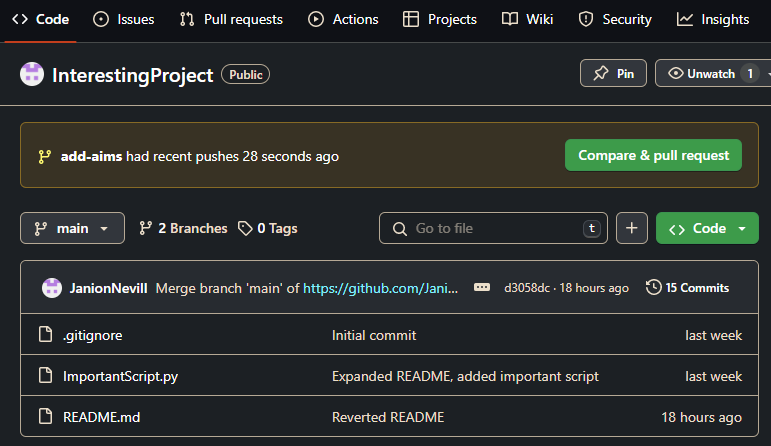
If the branch is older and hasn’t had recent pushes, then a new pull request can be opened by clicking on “Pull requests” at the top of the page.
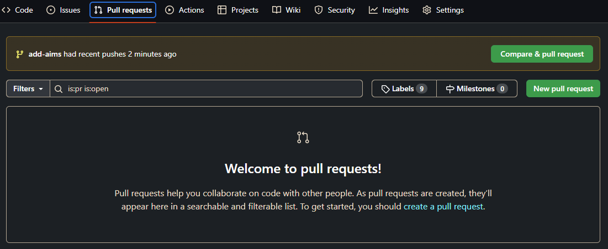
Click “New pull request” to open the configuration page, then select the branch to merge into main.
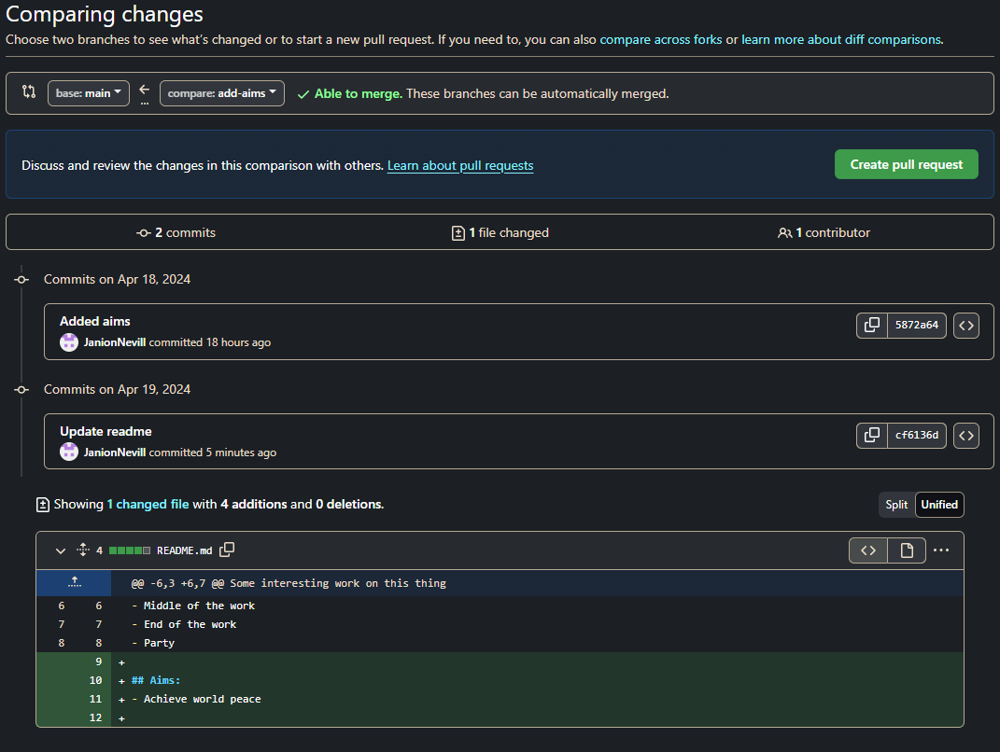
Add a title and a description, then click “Create pull request”.
Merge Pull Request
Within the created pull request, the changes can be reviewed. When happy with the changes, click “Merge pull request”. If changes cannot be automatically merged, then GitHub will ask you to resolve conflicts before merging.
The default commit message can be left unchanged unless required, then click “Confirm merge”.
Click “Delete branch” to delete the branch from the remote repository.
Returning to the home page of the project will show that the changes are now present on main and that there is only one branch on the project.
Checkout Main Branch in Sourcetree
Back in Sourcetree, the main branch needs to be checked out, as the local branch no longer points to a remote branch. Select the “main” branch in the “Branches” section in the left-hand panel, then right-click and click “Checkout main…”.
Once the checkout has completed, pull from the remote repository to get the merged changes. You can also delete the removed branches from Sourcetree as in section @ref(delete-sourcetree-branches).
Merging in Sourcetree
Merge Changes
In Sourcetree, checkout the main branch, as in @ref(post-merge-checkout), then click “Merge” in the top bar. Select the most recent commit from the branch, then click “OK”. The merge will be completed and the local main branch will include the changes from the branch.
The main branch should then be pushed to the remote repository.
Delete Branches
The branch can now be deleted both locally and remotely. The local repository can be deleted in the same right-click menu used to checkout a local branch.
The remote repository can be deleted in the same right-click menu used to checkout a remote branch.
Other Resources
- Happy Git and GitHub for the useR
- Getting started with Git and GitHub specifically for R users.
If you find yourself stuck with any of the topics covered in this document, please feel free to contact us at clareece.nevill@leicester.ac.uk or janion.nevill@leicester.ac.uk.
Glossary
| term | definition |
|---|---|
| API | API stands for "Application Programming Interface". It is a system which is provided by an application to allow for external programs to access it. |
| BitBucket | BitBucket is a remote repository hosting service, much like GitHub. |
| Branch | Branches are copies of the entire codebase which exist in parallel in a respository. |
| Checkout | When a branch is loaded onto the local computer, it is 'checked out. |
| Clone | Downloading a copy of an existing repository is called 'cloning'. |
| Codebase | The complete set of files containing the code from which an application or website is built. |
| Command Line | The text-based interface for interacting with computer systems. Sometimes refered to as "cmd", "the shell", "command prompt". |
| Commit | A 'commit' is a record of when changes to files are added, or 'committed', to the repository. Before the changes are committed, they are not saved in the version history. |
| Conflict | When changes are made to the same lines in a version-controlled file from multiple sources. Changes must be manually merged to reolve the conflicts. |
| Diff | Short for 'difference'. A record of the changes made to a file between commits. |
| Fetch | In Git, remote changes can be 'fetched', so that they can be inspected before they are merged into the working copy. |
| Git | Git is an application which manages files in version control, keeping track of all changes made to them. |
| Git Bash | Git Bash is an application to allow users to use text-based commands to interact with Git directly. |
| GitHub | Github.com is a file hosting service which uses Git to manage version control. |
| History | A record of all versions of the files, and the changes made between them. |
| Key | A key is an alternative to a password, but it does not contain the password itself. They are often used to access APIs. |
| Local | Anything which is found only on the computer being used at the time is considered "local". This can be applied to: files, changes, repositories, branches, etc. |
| Markdown | A file format used to create simple formatted documents, using simple text-markers. |
| Mercurial | Mercurial is another version control application similar to Git. |
| Merge | When changes from one source (repo or branch) are integrated into another. |
| Pull | Changes in a remote repository are 'pulled' into the local repository. These remote changes are then found in the local history. |
| Pull Request | A pull request (or "PR") is a request to merge code from one branch into another. |
| Push | Local changes are uploaded, or 'pushed', to a remote repository. |
| Remote | Anything which is not found on the computer being used at the time, but is stored elsewhere, is considered "remote". This can be applied to: files, changes, repositories, branches, etc. A common example is a repository hosted on GitHub.com. |
| Repository | A folder on your own computer, or in the cloud, which contains the files and tracks the changes. Sometimes refered to as a 'repo' (REE-po). |
| Revert | When uncommitted changes are discarded, to restore the file(s) back to the most recent commit, they are 'reverted'. |
| Source code | The code from which an application or website is built. |
| Sourcetree | Sourcetree is an application which allows users to interact with Git via a graphical interface, rather than via the command line. |
| Stage | 'Staging' local changes marks them as ready for committing. Whole files, or individual changes within a file can be staged. |
| URL | URL stands for "Universal Resource Locator". It is the address of any item available via the internet. An example would be the web address of Google: https://google.com. |